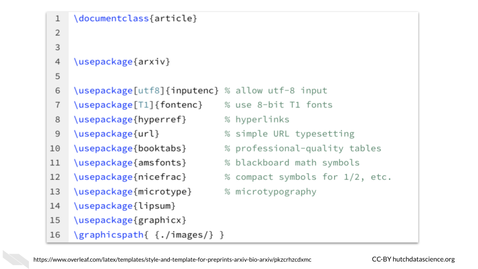
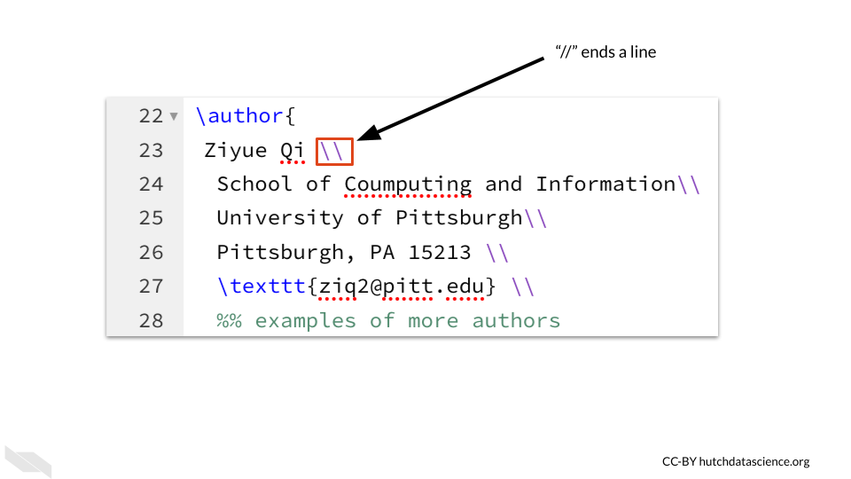
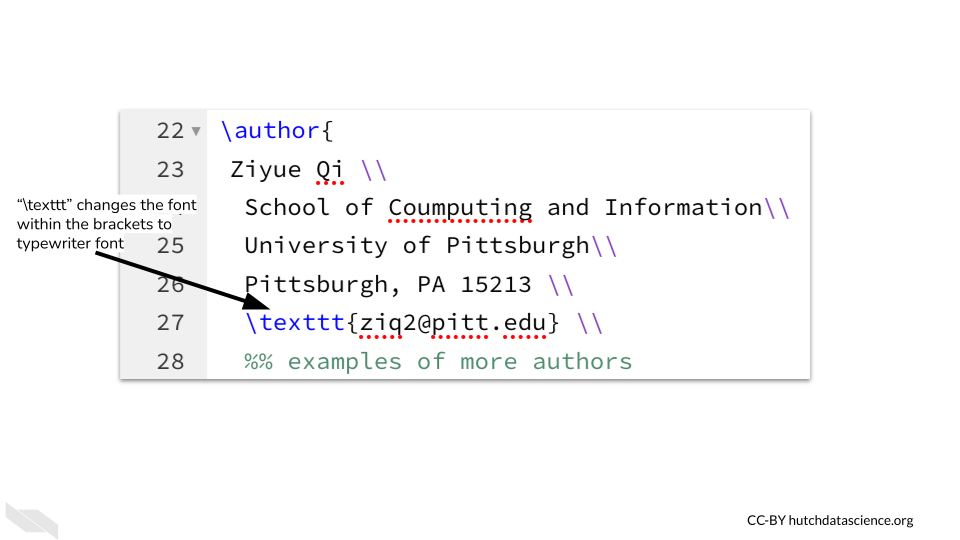
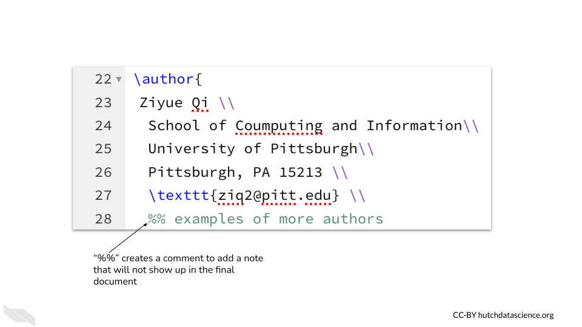
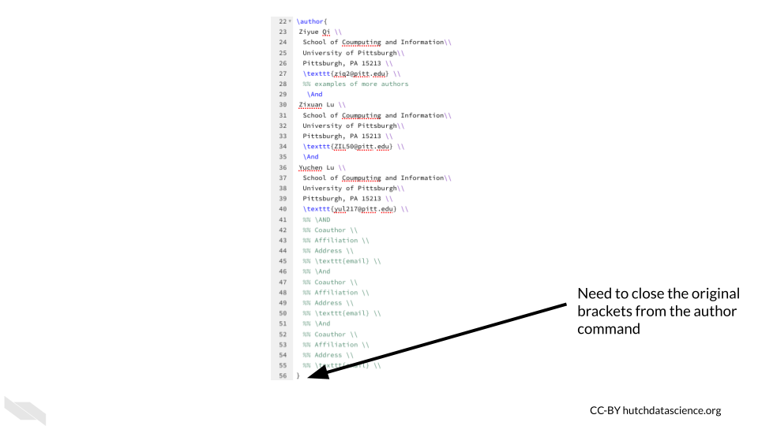

Chapter 4 Writing with Overleaf
Now that you know the advantages of using Overleaf and have started working with a template, we will now discuss more about how to make additional modifications to your document.

4.1 LaTeX Basics
Since we are working with a template, it isn’t necessary to learn everything there is to know about writing in LaTeX to get started. However, it can be useful to understand some fundamentals, so we will go over most of the commands that you see listed in the template.
4.1.1 Document Class
At the top of the template you will notice \documentclass{article}.

This specifies general typesetting information about the type of document that we intend to make. For example, it often specifies font size, the overall layout of the text, and alignment of various features of the text. Since we are writing a scientific article, the specification here is article.
To learn more about document classes see this documentation link form Wu (n.d.).
4.1.2 Packages
Next you will see that \usepackage{} is repeated several times with different information in the brackets:

We will refer to these tags with brackets such as \usepackage{} as commands from now on (as this is what the are generally referred to) and they cause a change to either the text within the brackets or the overall document.
The \usepackage{} command installs packages, which are collections of code that help you do additional things with your documents. Packages need to be installed before commands from those packages can be used. Commands from these packages will be utilized later in the template. It is recommended that you leave this code as is, and only modify the rest of the template until you learn more.
In addition to determining what commands you can use, packages will also determine how the content is formatted or laid out.
4.1.3 Author section
You may recall that we previously described how to bold font using \textbf{bold text}.
With LaTeX you will be using brackets often to designate what to do with a specific set of text that is contained within the brackets.
If you do not close a set of brackets you will get an error, so be careful about this.
As we scroll down the template, we next see the \title command that we previously worked with when we modified the text within the brackets to change the title.

Then we see the \author command, which adds authors to the paper. These will be formatted in the way that is shown on the template. When you see \\ two backslashes, this indicates that the line is finished and a new one is to be made. For tables or formatting like the authors, it should work well, but it is best to avoid using this for line breaks within the paragraphs that you might include in the paper.

We also see another command \textttt{} used within the \author{} command to change the text to typewriter font.

You may also notice %% examples of other authors is in green and does not show up in the rendered document. This is what is called a comment and it can be used to write notes about the material.

In the author section, the \And allows for additional authors to be added. It must be used between each author listing.

Finally, the author section needs to be completed by closing the brackets.

4.1.4 Formatting the Document Body
The command \begin{document} enables us to format text for the body of the article. This command comes directly after the author section. It will be paired with \end{document} that you will see at the bottom of the template if you scroll down. If you put %% in front of the command to change it to a comment (therefore not using it), you will see that the overall document is formatted slightly differently.
The \maketitle will add the title the page where the begin{document} command was used. If it is placed before begin{document}, the title and authors will show up on a separate page. You can test moving this command around to see how the document changes.

4.1.5 Abstract
The abstract section can be distinguished using the begin{} and end{} functions just like we used for the body of the document. These two commands will also be used later to indicate that a specific part of the document has started or ended.
4.1.6 Dummy text
You may notice \lipsum[] is used to create random chunks of text. The number within the brackets indicates what specific dummy paragraph to use. There are 150 possible, so the maximum value allowed in the brackets is 150.
4.1.7 Sections
\section{section name}- This will help you to create sections in the template. We don’t need to do anything to modify the text, it will automatically bold the text and number the sections (1, 2, 3 etc.).\subsection{subsubsection name}- This will help you to create subsections. These headings will be one level down from the section headings and will be numbered like 1.1, 1.2.\subsubsection{subsubsection name}- This will help you to create sections one level down from subsections. These heading will be numbered like 1.1.1, 1.1.2.
In the template you can see how these are formatted:


You can specify if you want sections to be not be numbered when using an asterisks * between the command name and the brackets section*{}.
The \paragraph{} command works similarly, but without numbering. The text within the brackets is an optional word or phrase that will have bold font to start the paragraph. You can also leave it empty.

4.1.8 Equations
It can be very helpful to include a mathematical equation. To do so we need to use our handy \begin{equation} and \end{equation} functions to indicate the boundaries. Using equation within the brackets indicates that this should be formatted in a certain way. It will center the text nicely and number it.
For more information about mathematical expressions in overleaf see the Overleaf documentation.
4.2 Conclusion
We hope that this chapter has helped you feel more confident to start filling out the template with your own content.
Here are some of the major take-home messages:
- The
\documentclass{article}command indicates that we are creating a scientific article. - Packages are used to add additional features for users, to install them for a document we need to use the
\usepackage{}command. - Be careful about your brackets when writing your code. If you leave one set open it could cause an error.
- The double backslash
\\can indicate the end of an item in the author list for example. - The
begin{}andend{}commands indicate when an element is starting or finishing. This could just be an abstract, or the entire body of the document. - Section headers can be automatically numbered and styled. The
section{},subsection{}, andsubsubsection{}will make progressively more nested sections. - LaTeX is great for including mathematical notations and equations in documents.